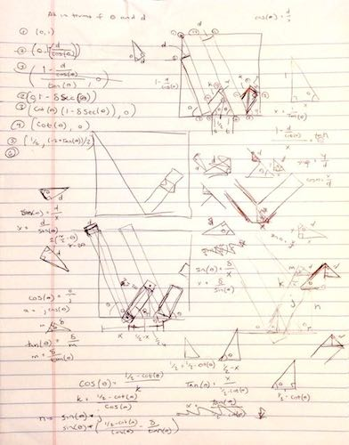
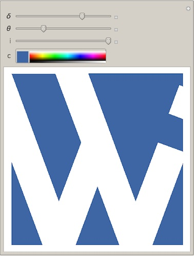

Logo Design
2016-07-12
The design of the logo on this site is based on a "William" logo I created in a high school class using AutoCAD. I tried using several different design applications including Pixelmator, Assembly (iOS), and a couple of other iPhone apps. I ultimately decided to use Wolfram Language for its mathematical precision.
The desired properties of the logo were that:
- the logo be contained within a perfect square,
- the top left corner of the enclosing square intersect with the right-most boundary of the left-most portion of the "W",
- the "W" be perfectly centered,
- the "dot" on the "i" be a perfect square,
- all segments of the "W" have the same width
δ, - the distance between the "dot" and the base of the "i"
ibe less than or equal toδ, and - all segments be at the same angle
ϴ(or its supplement) with respect to the x-axis.
Given these contraints, I dusted off my memories of trigonometry and went to work putting all points of interest in terms
of δ, ϴ, and i:

I then Simplify[]'d the points using Wolfram Language and put them in a Manipulate[] so I could
quickly and easily see how the logo looked with different values of δ, ϴ, and i. I
also created a variable in the Manipulate[] for the background color. Initially, I created polygons for the five
rectangular segments of the "W". However, I wanted the "W" itself to be transparent, so I ended up creating polygons for the
surrounding "background". There was no need to keep the polygons within the enclosing square region since I could set the
plot range to clip everything outside of that square.
Here is the final code used to create my logo:
Manipulate[
With[{
lowerEndPoint = {
(3 - 4*Cot[ϴ] + δ*Csc[ϴ] + 2*δ*Sin[ϴ])/2,
(-2 - 2*δ*Cos[ϴ] + δ*Sec[ϴ] + Tan[ϴ])/2
},
upperEndPoint = {
(3 - 4*Cot[ϴ] + δ*Csc[ϴ])/2,
(-2 + δ*Sec[ϴ] + Tan[ϴ])/2
}
},
Graphics[{
EdgeForm[],
c,
Polygon[{
{
{0, 1 - δ*Sec[ϴ]},
{Cot[ϴ] - δ*Csc[ϴ], 0},
{0, 0}
},
{
{Cot[ϴ], 0},
{1/2, (-2 + Tan[ϴ])/2},
{1 - Cot[ϴ], 0}
},
{
{1 - Cot[ϴ] + δ*Csc[ϴ], 0},
lowerEndPoint + {(2 + δ)*Cos[ϴ], (2 + δ)*Sin[ϴ]},
{1, 0}
},
{
lowerEndPoint,
upperEndPoint,
upperEndPoint + {i*Cos[ϴ], i*Sin[ϴ]},
lowerEndPoint + {i*Cos[ϴ], i*Sin[ϴ]}
},
{
upperEndPoint, {1 - Cot[ϴ] + (1/2)*δ*Csc[ϴ], (δ*Sec[ϴ])/2},
{1 - 2*Cot[ϴ] + δ*Csc[ϴ], 1},
upperEndPoint + {(2 + δ)*Cos[ϴ], (2 + δ)*Sin[ϴ]}
},
{
lowerEndPoint + {(i + δ)*Cos[ϴ], (i + δ)*Sin[ϴ]},
upperEndPoint + {(i + δ)*Cos[ϴ], (i + δ)*Sin[ϴ]},
upperEndPoint + {(2 + δ)*Cos[ϴ], (2 + δ)*Sin[ϴ]},
lowerEndPoint + {(2 + δ)*Cos[ϴ], (2 + δ)*Sin[ϴ]}
},
{
{1 - 2*Cot[ϴ], 1},
{(1 - δ*Csc[ϴ])/2, (-2 + δ*Sec[ϴ] + Tan[ϴ])/2},
{Cot[ϴ] - (δ*Csc[ϴ])/2, (δ*Sec[ϴ])/2},
{0, 1}
}
}]
},
PlotRange -> {{0, 1}, {0, 1}},
Background -> None
]
],
{
{δ, 0.1785}, 0, 1/4},
{{ϴ, 1.215}, (3*Pi)/8, (5*Pi)/12},
{{i, 0.1785}, 0, δ},
{c, RGBColor["#3E65A4"]},
LabelStyle -> "Text"
]
]
You can see this code in action via this Wolfram Cloud deployment. Here's what it looks like:
